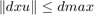

Single-integrator Barrier Certificate Algorithm
by Paul Glotfelter 3/24/2016
Contents
Set up Robotarium object
Before starting the algorithm, we need to initialize the Robotarium object so that we can communicate with the agents
% Get Robotarium object used to communicate with the robots/simulator r = Robotarium(); % Get the number of available agents from the Robotarium. We don't need a % specific value for this algorithm N = r.getAvailableAgents(); % This is a totally arbitrary number iterations = 20000; % Initialize the Robotarium object with the desired number of agents r.initialize(N);
Experiment constants
Next, we set up some experiment constants
% Initialize velocity vector for agents. Each agent expects a 2 x 1 % velocity vector containing the linear and angular velocity, respectively. dx = zeros(2, N); % This code ensures that the agents are initially distributed around an % ellipse. xybound = [-0.5, 0.5, -0.3, 0.3]; p_theta = (1:2:2*N)/(2*N)*2*pi; p_circ = [xybound(2)*cos(p_theta) xybound(2)*cos(p_theta+pi); xybound(4)*sin(p_theta) xybound(4)*sin(p_theta+pi)]; x_goal = p_circ(:,1:N); flag = 0; %flag of task completion
Retrieve tools for single-integrator -> unicycle mapping
% Let's retrieve some of the tools we'll need. We would like a % single-integrator position controller, a single-integrator barrier % function, and a mapping from single-integrator to unicycle dynamics position_int = create_si_position_controller('XVelocityGain', 1, 'YVelocityGain', 1); si_barrier_certificate = create_si_barrier_certificate('SafetyRadius', 0.1); si_to_uni_dyn = create_si_to_uni_mapping2('LinearVelocityGain', 0.75, 'AngularVelocityLimit', pi);
Begin the experiment
This section contains the actual implementation of the barrier certificate experiment.
%Iterate for the previously specified number of iterations for t = 1:iterations
% Retrieve the most recent poses from the Robotarium. The time delay is % approximately 0.033 seconds x = r.getPoses(); x_temp = x(1:2,:);
Algorithm
% Let's make sure we're close enough the the goals if norm(x_goal-x_temp,1)<0.08 flag = 1-flag; end % This code makes the robots switch positions on the ellipse if flag == 0 x_goal = p_circ(:,1:N); else x_goal = p_circ(:,N+1:2*N); end % Use a single-integrator position controller to drive the agents to % the circular formation dx = position_int(x(1:2, :), x_goal);
Normalization of controls. This code ensures that

dxmax = 0.1;
for i = 1:N
if norm(dx(:,i)) > dxmax
dx(:,i) = dx(:,i)/norm(dx(:,i))*dxmax;
end
end
Apply barrier certs. and map to unicycle dynamics
%Ensure the robots don't collide dx = si_barrier_certificate(dx, x); % Transform the single-integrator dynamics to unicycle dynamics using a % diffeomorphism, which can be found in the utilities dx = si_to_uni_dyn(dx, x);
Set the velocities of the agents
% Set velocities of agents 1,...,N r.setVelocities(1:N, dx); % Send the previously set velocities to the agents. This function must be called! r.step();
end